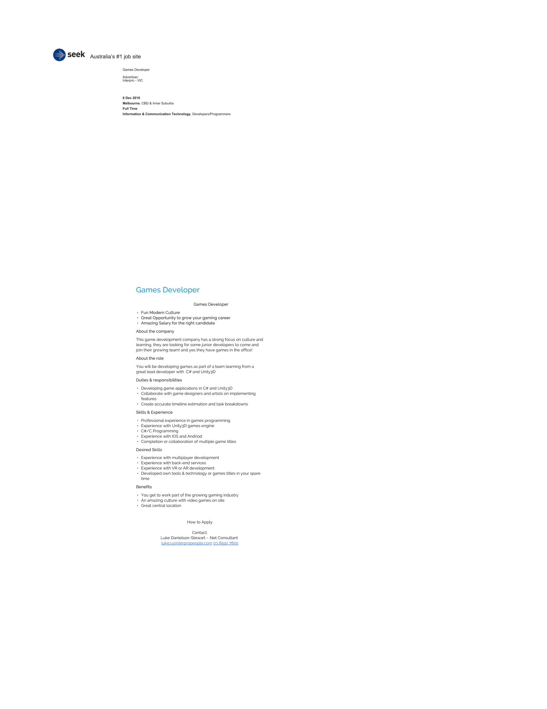

I have always had a fascination about IT and computers. How so much can be done by computers has always driven my curiosity. I want to have a greater understanding of it all so hopefully I can create things that I want for myself and others that interest me. I’ve not had any professional experience but hopefully this course can help change that.
I had heard of RMIT and how it had a good reputation for IT related courses coupled with the ability to study online made it a very easy choice to pick it to study at. I find the coursework fun and its good to be able to learn online so to suit my current work.
I hope at the end of the my studies that I have a greater understanding of Information technology, some of the roles within IT and also a better skillet and greater understanding of things like computer programming.
Screenshot and link to Job Advert
A description (in your own words) of the position, and particularly what makes this position appealing to you.
This role is a game developer these kind of roles interest me because video games have and they hold a special kind of creativity perhaps different to other IT related roles.
A description (in your own words) of the skills, qualifications and experience required for the position.
The ad looks like they are looking for someone with great skills in the game engine unity 3d and the programming language C#. I assume they would want a portfolio of other work completed and also a proven bachelor degree candidate within the industry.
A description (in your own words) of the skills, qualifications and experience you currently have.
I have no professional experience at the moment, only the odd thing ive read from the internet and some unfinished previous studies from a few years ago. My skills at the moment are very much amateur
A plan describing how you will obtain the skills, qualifications and experience required for the position, building on those you have now. This need not be greatly detailed, (and will probably change significantly over time anyway), but try to be as specific as you can.
I will look to finish my degree at RMIT to gain qualifications in the industry. I hope to then take just about any job within the IT sector to sort of get my foot in the door, with that experience hopefully I can move to something a little closer to the job ad